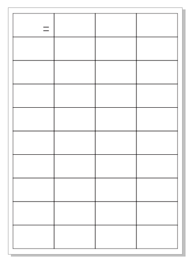
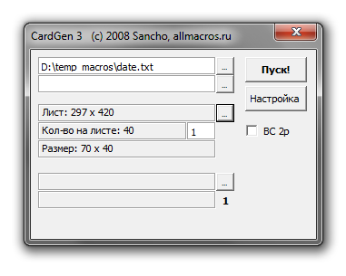
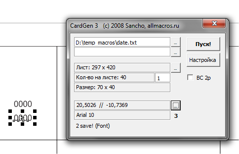

Авто нумерация
mixa / 13.07.2010, 14:58/00:41
Форум:
Добрый день всем! вот 3 дня тому назад столкнулся с такой проблемой (НУМЕРАЦИЕЙ) зашел такой заказ, на маленьких стикерах хотят нумерацию от 1 до 600.000. 3 дня я сидел и упорно набирал но так дальше можно просто спятить))) да и по мимо этого заказа еще куча всяких дел((((...
Помогите пожалуйста, существует ли какой нибудь макрос или там еще какой нибудь метод в кореле?
спасибо
неоднократно сталкивался с похожей ситуацией, когда надо напечатать кучу одинаковых объектов с порядковыми номерами, поэтому написал макрос CloneRight. По умолчанию он просто создает справа копию выделенного объекта, но при включенном NumLock'е при копировании увеличивает на единицу крайнюю правую группу цифр в тестовом объекте. Работает с группами и любыми тестовыми объектами. Если при копировании увеличиваются не те цифры, просто передвиньте нужный текстовый объект поверх других объектов.
$img2$
Добавлено (15.07.2010, 10:54)
---------------------------------------------
очепятка.. не тестовом (тестовыми), а текстовом объекте (текстовыми)
shark, отличный макрос, жаль что только в одну сторону работает!
Доработать бы его! Ценный макрос!
mixa,
Если устроит вариант, где в одном файле 999 номеров, адругие числа получаются добавлением цифр в сарших разрядах буквально в три клика, то за выходные напишу урок на эту тему.
То есть на печать отправляется файл с номерами 1-999. Следующий файл печатается с номерами 1001-1999 и т. д.
Создание такого файла не займёт много времени. Весит он ок.10 Мб. Принтер обрабатывает его довольно быстро. А самое главное – средствами только CorelDRAW, не прибегая к помощи сторонних программ и лишних конвертаций.
shark - гуру!
Воистину......!!!! :)
В тему:
Несколько лет назад написал макрос, продал и успешно забыл про него. Но вот как то подвернулась задачка разместить в карточках логины и пароли для Wi-Fi, и я сразу вспомнил про этот макрос.
Задача была поставлена след образом:
В TXT файле были предоставлены данные (логин/пароль, скорее всего выгруженные из Экселя), а в CDR файле экземпляр карты 70х40мм. Всего нужно было сделать 500 карт.
Решение выглядело следующим образом:
Выделив контур карты и два текстовых объекта (логин/пароль), я скопировал их в новый файл А3 формата. Раскидал контур карты по листу с помощью докера трансформации так, как они должны располагаться. Текстовые объекты оставил лишь в первой карте. Она послужит шаблоном. Получилось следующее:

Подготовительная работа завершена и в «игру» вступает макрос.
Запускаю его, и сразу указываю текстовый файл, из которого брать данные. Затем выделяю все контуры карты (без текстовых блоков), и нажимаю кнопку в макросе, что бы он запомнил расположение и порядок, в котором создавать карты.

Затем, в том порядке, в котором располагаются данные в TXT, по очереди выделяю текстовые объекты и для каждого с помощью специальной кнопки в макросе запоминаю параметры, такие как шрифт, размер, положение, цвет и подобные.

Вот и всё, осталось нажать кнопку «Пуск»!
После того как макрос сгенерирует нужное кол-во страниц и расставит на них данные, можно будет разложить сами карты на один лист и просто подложить их фоном. Готово!
Весь процесс работы макроса можно посмотреть в этом небольшом видео.
П.С. Кроме расположения текстовых данных, он умеет расставлять картинки, штрих-коды, примитивы (например, прямоугольники). Может делать карты с данными на лице и обороте. Пусть работает не так красиво как хотелось бы (во время работы макроса нельзя делать что либо параллельно на этом же компьютере), зато тонна работы делается за считанные минуты. И пока работает макрос, Вы можете сходить попить чаю/кофе. :)
Круто!
Ребят огромное вам спасибо! я даже не ожидал такой помощи :ab:, Sancho мне очень понравился твой макрос ;D
Shark а твоим макросом я воспользовался и у меня все получилось , большое спасибо
shark, Скажи, пожалуйста, пароль на доступ к макросу через VBA:(( Очень надо:( Сам сейчас занимаюсь изучением VBA. Которые функции непонятны. Заранее, СПАСИБО!
shark,
спасибо огроменное
спасли меня, я вообще в шоке, как представлю, что пришлось бы в ручную делать!!!!
всегда пожалуйста :)
Страницы